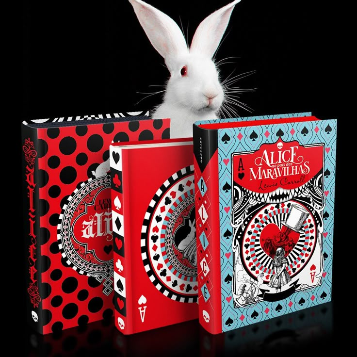

Minhas Recomendações de Livros

Alice no País das Maravilhas
Uma menina, um coelho e uma história capazes de fazer qualquer um de nós voltar a sonhar. Alice é despertada de um leve sono ao pé de uma árvore por um coelho peculiar. Uma criatura alva e falante com roupas engraçadas, que consulta seu relógio e reclama do próprio atraso. Curiosa como toda criança, Alice segue o animal até cair em um buraco sem fim que mudou para sempre a literatura infantil.
Compre o Livro
Um furioso romance de estreia sobre a importância de enfrentar o inferno da opressão e do preconceito.
"O Inferno que nos Persegue" é um triunfo literário, com uma prosa inventiva que dá vida a personagens diversos e cheios de camadas e um enredo envolvente, o premiado romance de Andrew Joseph White é uma experiência imersiva em um mundo distópico que mistura elementos de body horror, monstros arrepiantes e abuso religioso.
Compre o Livro